Ethnicity and Self-Identity
Exploration of 2020 Pew Research Center Survey
Michael Foley
2021-12-26
Ipsos Public Affairs (Ipsos) conducted a survey on behalf of Pew Research from Jan 3-13, 2020 related to knowledge and attitudes about the 2020 census. The target population was non-institutionalized adults age 18 and older residing in the United States. The survey was conducted in part to explore the impact of a change in questions related to race and ethnicity. This project further explores racial/ethnic identity, estimating its relationship with other social and demographic factors: age, gender, education, and state of residence.
Load Data Set
The 2020 Census survey #1 data set is available for download at the PEW Research web site.1
pew_dat_0 <- foreign::read.spss(
"../data/Jan20 Census_cleaned dataset.sav",
to.data.frame = TRUE
)
dim(pew_dat_0)## [1] 3535 156The data set consists of 156 variables collected from 3,535 participants. Only a fraction of the columns are of interest for this analysis.2
pew_dat_1 <- pew_dat_0 %>%
mutate(
CENRACE2020 = case_when(
CENRACE2020_1 == "Yes" ~ "White",
CENRACE2020_2 == "Yes" ~ "Black", # Black or African American
CENRACE2020_3 == "Yes" ~ "Other", # American Indian or Alaska Native
CENRACE2020_4 == "Yes" ~ "Asian", # Chinese
CENRACE2020_5 == "Yes" ~ "Asian", # Filipino
CENRACE2020_6 == "Yes" ~ "Asian", # Asian Indian
CENRACE2020_7 == "Yes" ~ "Asian", # Vietnamese
CENRACE2020_8 == "Yes" ~ "Asian", # Korean
CENRACE2020_9 == "Yes" ~ "Asian", # Japanese
CENRACE2020_10 == "Yes" ~ "Asian", # Other Asian
CENRACE2020_11 == "Yes" ~ "Pacific Islander", # Native Hawaiian
CENRACE2020_12 == "Yes" ~ "Pacific Islander", # Samoan
CENRACE2020_13 == "Yes" ~ "Pacific Islander", # Chamorro
CENRACE2020_14 == "Yes" ~ "Pacific Islander", # Other Pacific Islander
CENRACE2020_15 == "Yes" ~ "Other", # Some other race
TRUE ~ "Other"
),
simple_eth = factor(
case_when(
racnum == 1 & CENHISPAN2020_1 == "Yes" & CENRACE2020 == "White" ~ "White",
racnum == 1 & CENHISPAN2020_1 == "Yes" & CENRACE2020 == "Black" ~ "Black",
racnum == 1 & CENHISPAN2020_1 == "No" ~ "Hispanic",
TRUE ~ "Other"
),
levels = c("White", "Black", "Hispanic", "Other")
),
CENIDENTITYa = factor(
CENIDENTITYa,
levels = c("My origin is not central to my identity",
"My origin is central to my identity",
"Refused"),
labels = c("Not central", "Central", "Refused")
),
CENIDENTITYb = factor(
CENIDENTITYb,
levels = c("I am not too familiar with my origins",
"I am very familiar with my origins",
"Refused"),
labels = c("Not too familiar", "Very familiar", "Refused")
),
CENIDENTITYc = factor(
CENIDENTITYc,
levels = c("I do not feel a strong connection with the cultural origin of my family",
"I feel a strong connection with the cultural origin of my family",
"Refused"),
labels = c("Not a strong connection", "Strong connection", "Refused")
),
IDEO = factor(
IDEO,
levels = c("Very conservative", "Conservative", "Moderate", "Liberal", "Very liberal", "Refused"),
ordered = TRUE
),
ppagecat = factor(ppagecat, ordered = TRUE),
ppagecat = fct_drop(ppagecat),
ppagect4 = factor(ppagect4, ordered = TRUE),
ppagect4 = fct_drop(ppagect4),
ppeducat = factor(ppeducat, ordered = TRUE),
CASEID = as.character(CASEID),
RACEOE_1 = factor(if_else(!str_detect(RACEOE_1, "^Protest"), "Other", "Protest"))
) %>%
select(
CASEID, weight, simple_eth, CENIDENTITYa, CENIDENTITYb, CENIDENTITYc, IDEO,
RACEOE_1,
ppage, ppagecat, ppagect4, ppeducat, ppgender, ppreg4,
ppreg9, ppstaten
)
pew_dat_1 %>% skimr::skim()| Name | Piped data |
| Number of rows | 3535 |
| Number of columns | 16 |
| _______________________ | |
| Column type frequency: | |
| character | 1 |
| factor | 13 |
| numeric | 2 |
| ________________________ | |
| Group variables | None |
Variable type: character
| skim_variable | n_missing | complete_rate | min | max | empty | n_unique | whitespace |
|---|---|---|---|---|---|---|---|
| CASEID | 0 | 1 | 1 | 4 | 0 | 3535 | 0 |
Variable type: factor
| skim_variable | n_missing | complete_rate | ordered | n_unique | top_counts |
|---|---|---|---|---|---|
| simple_eth | 0 | 1 | FALSE | 4 | Whi: 2063, His: 750, Oth: 452, Bla: 270 |
| CENIDENTITYa | 0 | 1 | FALSE | 3 | Not: 2204, Cen: 1199, Ref: 132 |
| CENIDENTITYb | 0 | 1 | FALSE | 3 | Ver: 2246, Not: 1188, Ref: 101 |
| CENIDENTITYc | 0 | 1 | FALSE | 3 | Not: 1726, Str: 1714, Ref: 95 |
| IDEO | 0 | 1 | TRUE | 6 | Mod: 1512, Con: 866, Lib: 563, Ver: 319 |
| RACEOE_1 | 0 | 1 | FALSE | 2 | Oth: 3484, Pro: 51 |
| ppagecat | 0 | 1 | TRUE | 7 | 55-: 779, 35-: 605, 65-: 596, 45-: 553 |
| ppagect4 | 0 | 1 | TRUE | 4 | 60+: 1242, 45-: 955, 30-: 847, 18-: 491 |
| ppeducat | 0 | 1 | TRUE | 4 | Bac: 1248, Hig: 1004, Som: 966, Les: 317 |
| ppgender | 0 | 1 | FALSE | 2 | Fem: 1781, Mal: 1754 |
| ppreg4 | 0 | 1 | FALSE | 4 | Sou: 1301, Wes: 924, Mid: 693, Nor: 617 |
| ppreg9 | 0 | 1 | FALSE | 9 | Sou: 697, Pac: 671, Eas: 503, Mid: 464 |
| ppstaten | 0 | 1 | FALSE | 51 | CA: 503, TX: 320, FL: 253, NY: 190 |
Variable type: numeric
| skim_variable | n_missing | complete_rate | mean | sd | p0 | p25 | p50 | p75 | p100 | hist |
|---|---|---|---|---|---|---|---|---|---|---|
| weight | 0 | 1 | 1.00 | 0.68 | 0.24 | 0.59 | 0.82 | 1.15 | 4.42 | ▇▂▁▁▁ |
| ppage | 0 | 1 | 50.99 | 16.87 | 18.00 | 37.00 | 53.00 | 64.00 | 94.00 | ▅▆▇▆▁ |
The target population consisted of … The survey sample results were weighted by gender (ppgender), age (ppage, ppagecat, ppagecat4), education (ppeducat), census region (ppreg4, ppreg9, ppstateen), race/ethnicity (CENRACE2020_1 and CENHISPAN2020_1 which I combined into simple_eth. An open text question asked to self-describe race, RACEOE and I counted instances coded as “protest” in RACEOE_1), internet access, political ideology (IDEO), volunteerism (volunteered, did not volunteer), voter registration (Yes , No), and Country of birth. CASEID is a unique identifier for the weighted group, and weight is the response weight.
Among other questions, the survey asked three yes/no questions (CENIDENTITYa, CENIDENTITYb, and CENIDENTITYc) related to how central the respondent’s cultural origin is to their self-identity.
Data Exploration
Importance of Cultural Origins
The following figures loosely follow Pew’s 5/14/2021 report, Black and Hispanic Americans See Their Origins as Central to Who They Are, Less So for White Adults.
The main conclusion from Pew’s report is that the importance of ancestral roots varies by race and ethnicity. The first, second, and fourth figures in the report are based on three questions about the respondent’s relationship to the cultural origin of their family. Question CENIDENTITYa asked how central their origins are to their identity; Question CENIDENTITYb asked how familiar they are with their origins; and CENIDENTITYc asked how connected the respondent is with their origins.
Centrality
Here is a pair of statements about how you think about your origin (for example, German, Mexican, Jamaican, Chinese, etc.) Which statement comes closer to your view – even if neither is exactly right?
1 My origin is central to my identity
2 My origin is not central to my identity
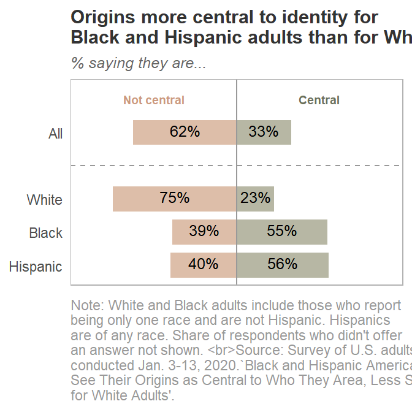
Familiarity
Here is a pair of statements about how you think about your origin (for example, German, Mexican, Jamaican, Chinese, etc.) Which statement comes closer to your view – even if neither is exactly right?
1 I am very familiar with my origins
2 I am not too familiar with my origins
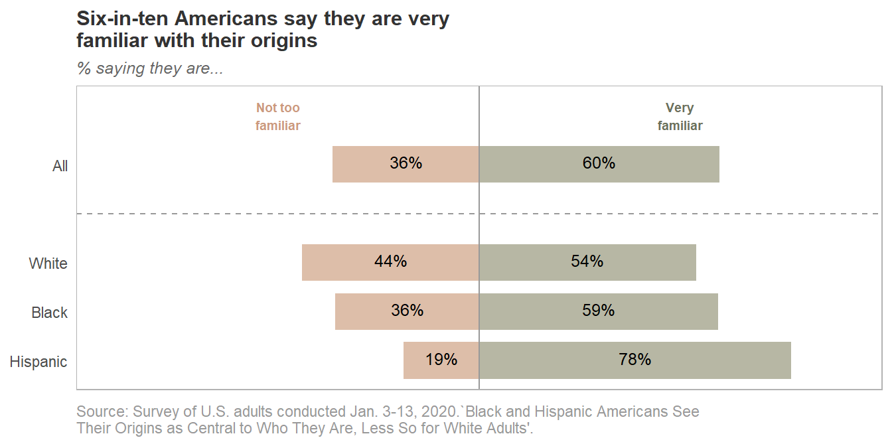
Connectedness
Here is a pair of statements about how you think about your origin (for example, German, Mexican, Jamaican, Chinese, etc.) Which statement comes closer to your view – even if neither is exactly right?
1 I feel a strong connection with the cultural origin of my family
2 I do not feel a strong connection with the cultural origin of my family
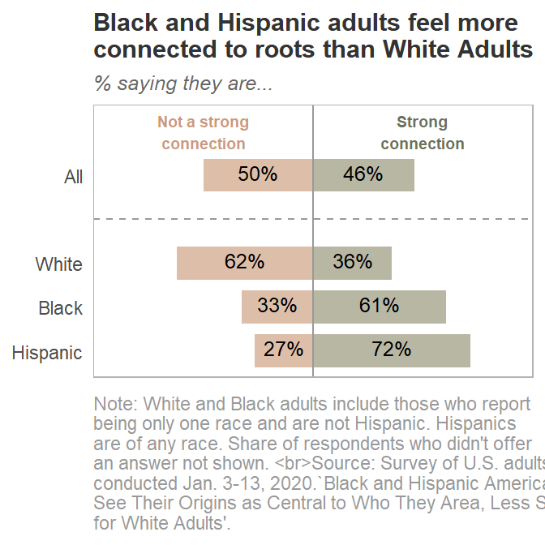
Relationship with Social and Demographic Factors
The Ipsos survey data includes four social and demographic variables that can further segment the race/ethnicity differences: education, age, gender, and geograph location.
Education
Variable ppeducat is defined as the highest level of education received. The results below are likely influenced by age since younger respondents are unlikely to have a Bachelor’s degree or higher.
Centrality
There is an inverse relationship between level of education received and the importance of family origins for all three race/ethnicity groups. Black Americans with less than a high school degree are a possible exception.
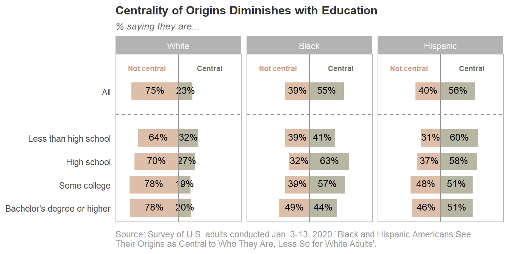
Familiarity
Familiarity with family origins increases with education level for all three race/ethnicity groups. Black Americans with less than a high school degree are a possible exception.
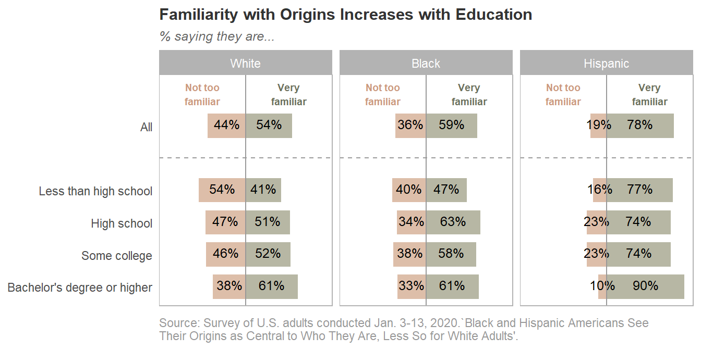
Connectedness
A third of white Americans report a strong connection to family origins, a proportion that is not moderated by level of education. There is a mild positive association in connectedness for Black Americans, and a mild negative association with Hispanic Americans.
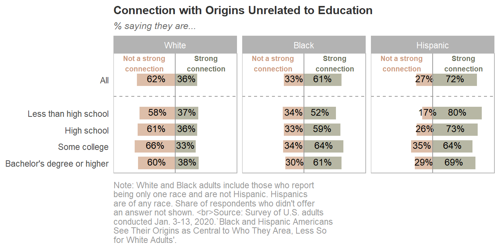
Age
Variables ppage, ppagecat (7 levels), ppagect4 (4 levels) are the respondent’s age.
Centrality
Cultural origins are not central to the identity of White Americans regardless of age (perhaps a mild positive relationship?). For Black Americans there is a bell shaped distribution. For Hispanic Americans, cultural origins are central to identity regardless of age (perhaps a mild negative relationship?).
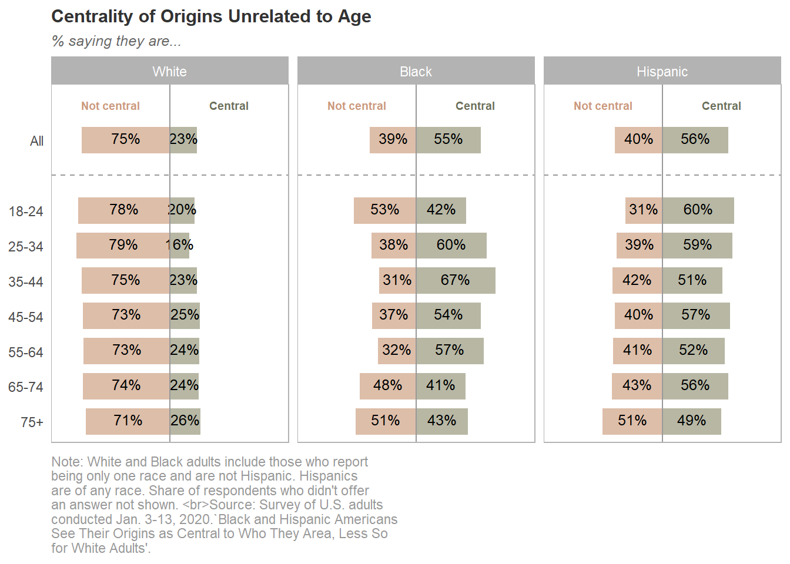
Familiarity
Familiarity with family origins increases with age level for all three race/ethnicity groups. Black Americans over 75 years of age are a possible exception.
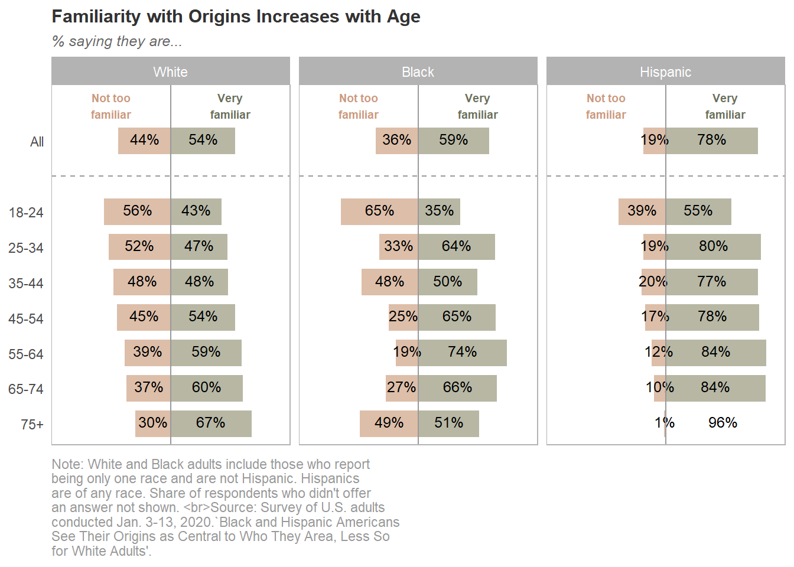
Connectedness
Connection to family origins does not appear to be related to age for any race/ethnicity.
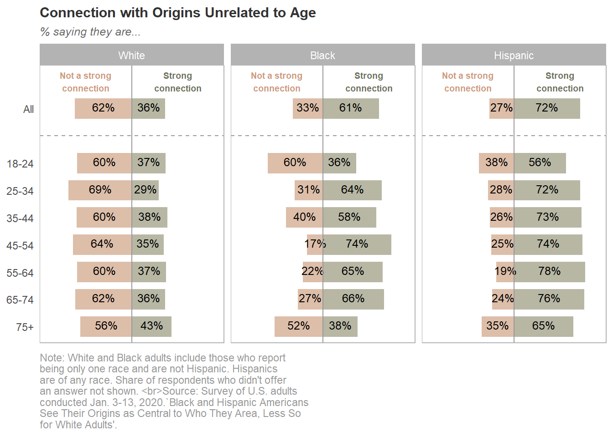
Gender
Variable ppgender is the respondent’s gender.
Centrality
White women were slightly more likely than White men to report family cultural origins were central to their identity. For Black Americans the relationship is reversed. Hispanic Women were more much more likely to report a central role for cultural origins than men.
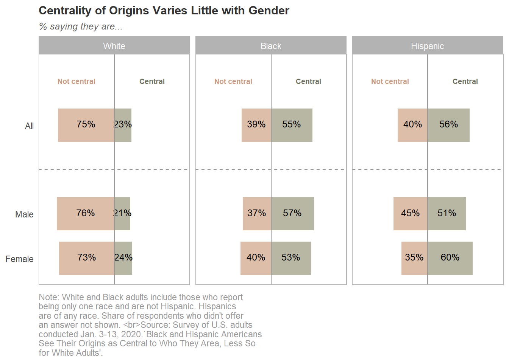
Familiarity
Familiarity with family origins is about equal between genders of all three groups.
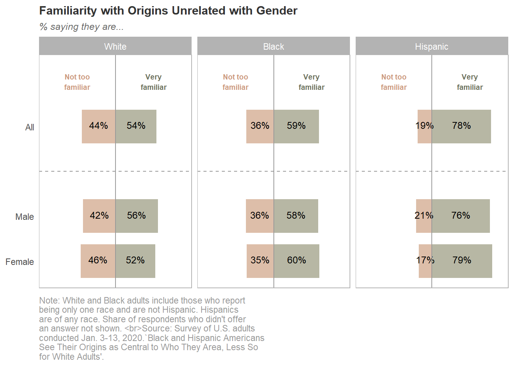
Connectedness
Connection to family origins does not appear to be related to gender for any race/ethnicity.
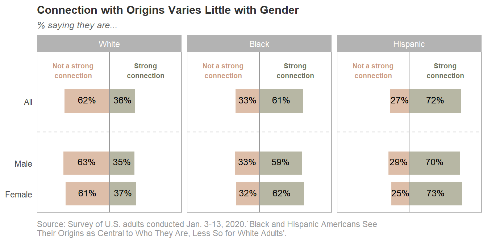
Geography
Variables ppstaten, ppreg9, and ppreg4 are geographic indicators of the respondent’s residence.
Centrality
Americans on the coasts were more likely to report family cultural origins were central to their identity.
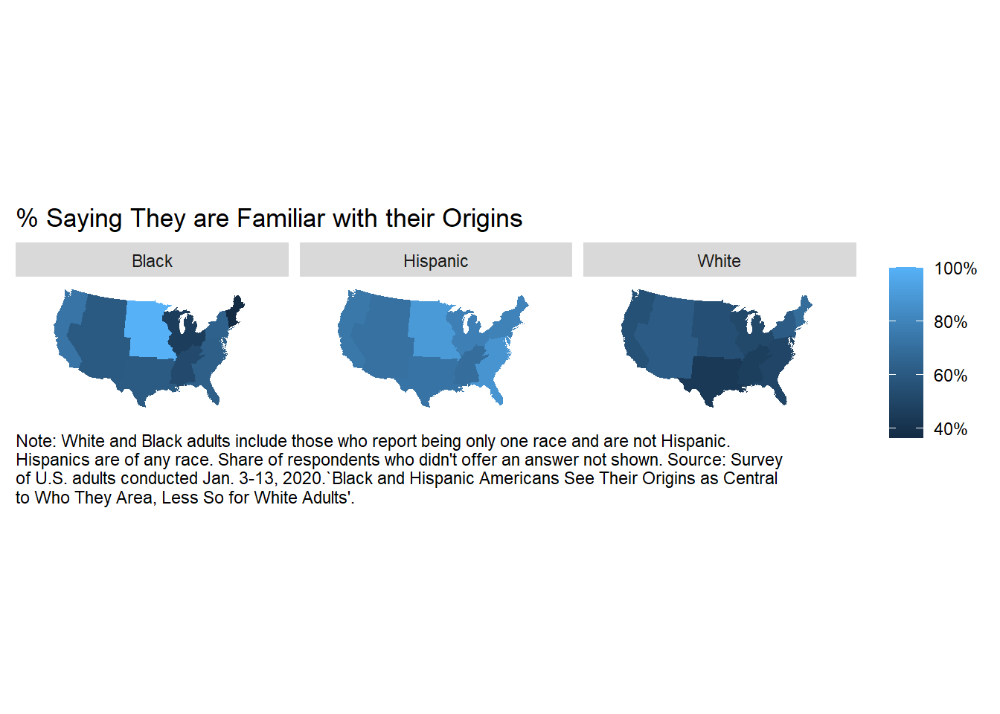
Familiarity
Familiarity with family origins is more common in the interior rather than the coasts.

Connectedness
Connection to family origins is highest in the Mountain states for Black Americans, and the Atlantic states for Hispanic Americans.
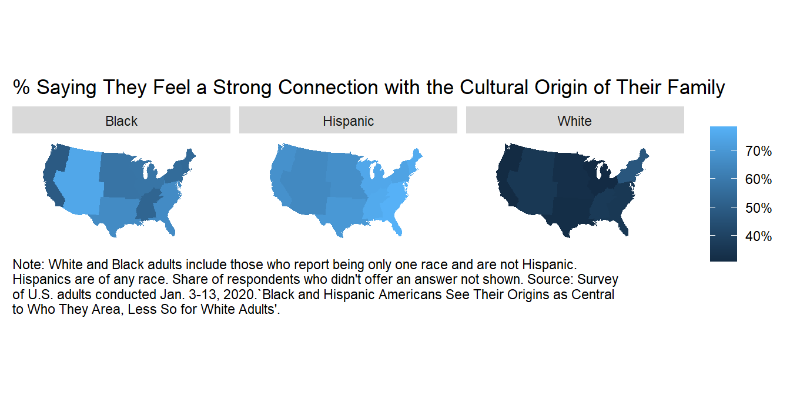
Save Data
saveRDS(pew_dat_1, "../data/1_get_data.rds")Navigate to this survey from the Pew Research Center home page by clicking TOOLS & RESOURCES > Dataset Downloads > Social & Demographic Trends > 2020 Census survey #1. You may have to register for a free account.↩︎
The Jan20 Census_methodology.pdf file located in the project data directory on GitHub includes a codebook of census variables.↩︎